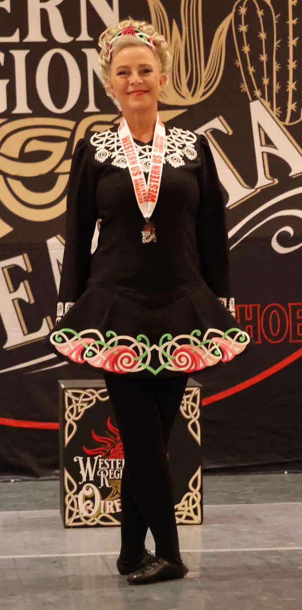
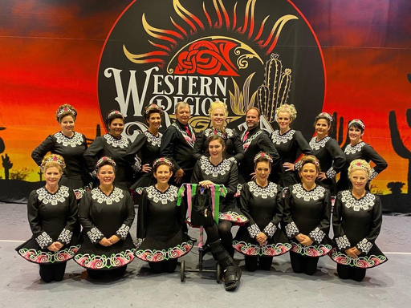
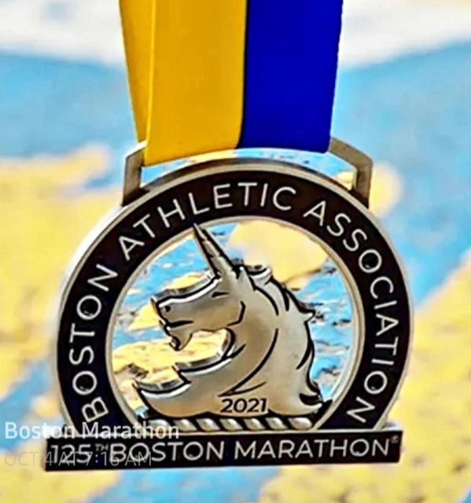
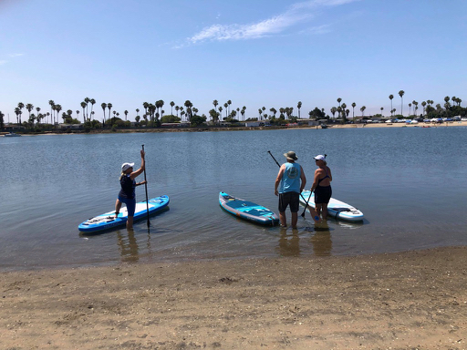
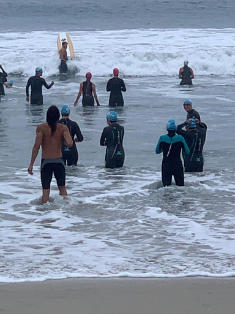
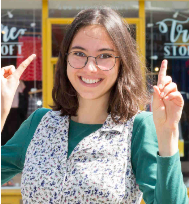
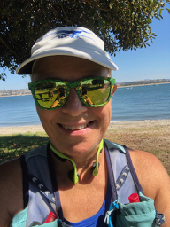

|
2021 has certainly continued to be plagued by COVID-related issues, but thanks to vaccines, mask wearing, and other procedures to help slow the spread of the virus, there are a few more events for me to write about this year.
Last month saw the return of the US Western Region Irish Dance Championships (Oireachtas) that was held this year in Phoenix, Arizona. I was able to compete once again in solo, 4-hand, and 8-hand competitions. Thanks to COVID hair (i.e. no hair cuts) I had to invest in my first Irish dance wig (see photos right). It took quite a bit of practice to figure out how to secure that thing for dancing! I had very little expectation of this competition, since due to COVID restrictions we had not been able to practice as a team until only a few weeks before competing, so I was thrilled when both my teams came 2nd and I came 9th in the solos. It was also one of the few occasions on which I was able to spend a couple of days away from home, with the added bonus of spending time with my wonderful dance family.
|


|
|
Unfortunately, I have been working two jobs all year (60 hours total per week). During school hours, I work in a public school kindergarten class for kids with ASD. I love working with the kindergarteners, but unfortunately the job doesn't pay enough to be my sole source of income, so I still teach coding to older kids after school. The coding job has been from home 4 days out of 5 this year, but may return to in person in 2022 which will be more challenging to manage.
I hope to soon get ONE full-time teaching position so I can go back to a normal work/life balance. There are lots of openings for teachers being advertised, but they are mostly part-time and do not come with benefits such as health insurance, which I obviously need. I continue to hope that something will come up before the end of this school year and if not, I will have to explore other career options.

I have always said I would NEVER EVER run a marathon, but this year the Boston Marathon offered a chance to run it virtually. A number of friends in my running club thought this was too good an opportunity to miss (you have to be REALLY fast to qualify for the “real” Boston marathon) so we ran the distance at our local (and flat) Mission Bay location, and I can now proudly say I have my first marathon medal (see above).
|

I still really enjoy living close to such a beautiful coastline, and this year I have added paddleboarding (above) and ocean swimming (below) to the ways I enjoy being by the ocean.

Thanks to getting back to swimming, I have actually entered my first triathlon – a reverse sprint triathlon – which basically means the distances are short and the order of the events is run-bike-swim which sounds a lot better to me than the usual swim-bike-run sequence.
|
I continue to be incredibly proud of Lisa (below), who this year was awarded a “first” in Psychology from Bristol University. The graduation ceremonies were canceled in 2021 so I was not able to see her collect her degree. If they decide to hold a ceremony in 2022, I will definitely go to the UK for that. Shortly after graduating, Lisa was able to secure an internship at Greenhouse PR in Bristol, and has since been hired by them. I haven’t seen her for so long and can’t wait for her to come home for Christmas.

Wishing you all a very happy
holiday season!

|